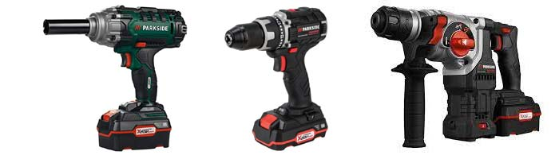
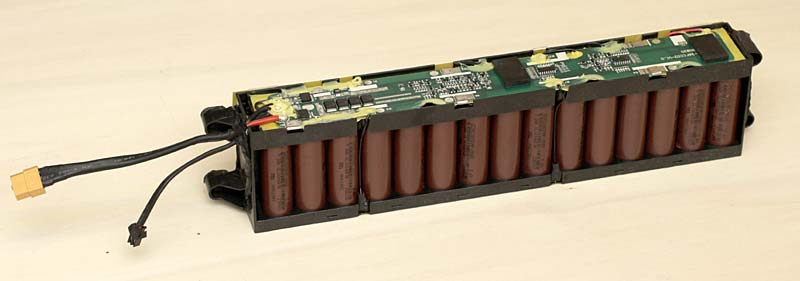
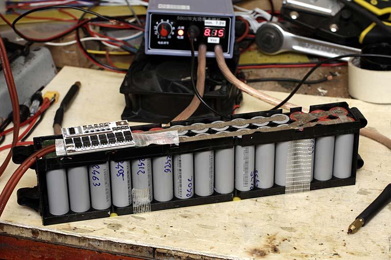
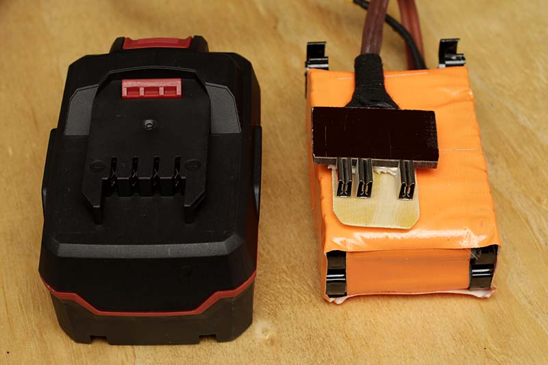
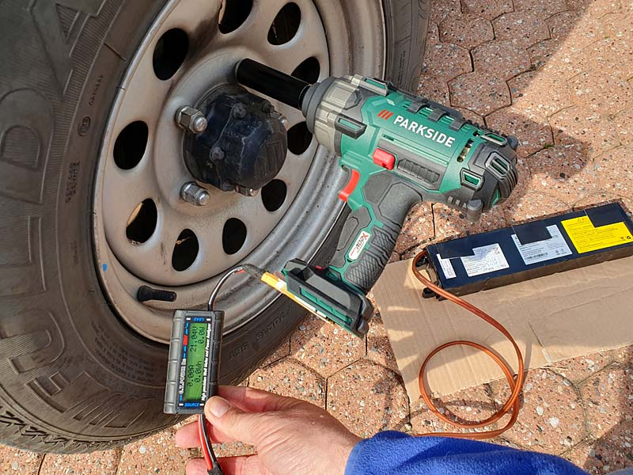

Batterie & energia
PARKSIDE pacco batteria 20V 15Ah
Come aumentare autonomia utensili 20V "Fai da te" di R.Chirio
Marzo 2023
A marzo ci sono state parecchie offerte in merito elettroutensili Parkside, personalmente ho acquistato diversi prodotti con batteria 20V, si evidenzia subito che spesso costa più la batteria che l'utensile stesso, ho deciso quindi di fare un pacco batteria decisamente performante utilizzando pacchi batteria per monopattino a mia disposizione.
Parkside è la linea di
utensili di Lidl, una catena di discount a livello internazionale.
L’azienda offre una vasta gamma di utensili manuali e elettrici ad un
prezzo accessibile per il consumatore.
Parkside è stato lanciato da Lidl nel 2010 come una linea di utensili di
alta qualità a prezzi accessibili. La gamma di prodotti include utensili
manuali come cacciaviti, pinze e martelli, così come utensili elettrici
come trapani, smerigliatrici, seghe eccetera. La missione di questo
marchio è quella di fornire ai clienti utensili affidabili e durevoli
che possono essere utilizzati per soddisfare le esigenze quotidiane dei
clienti.


- Questa è la batteria da monopattino 36V 7,5Ah 270Wh utilizzata principalmente su monopattini fascia media, è caratterizzato dalla gabbia in plastica isolante avente funzioni isolanti e di contenimento per le 30 celle 18650 da 2,5Ah. Sopra si nota il BMS e i suoi componenti. La batteria viene completamente smontata, si toglie il BMS e si riposizionano le celle per una configurazione di 5 gruppi in serie composto da 6 celle in parallelo.

- Questa è il risultato dopo la saldatura dei gruppi di celle, sempre una batteria da 270Wh ma a 18V 15Ah, manca solo più il collegamento del BMS

- Per collegare la batteria 21V 15Ah ai vari utensili si usa 1m di cavo morbido 2x2.5mmq, mentre sono stati usati dei clip di ottone adatti per i contatti a lamella. La polarità va rispettata come scritto sul pacco originale. Il terzo contatto, quello interno serve per il sensore di temperatura, NTC bisogna montarne uno da 10k ohm a contatto delle celle, in caso di riscaldamento spegne erogazione al motore dell'elettroutensile. Se non si vuole montare il NTC basterà collegare una resistenza da 10k verso il contatto vicino che è il negativo (-); un eventuale contatto termico (Klixon) in serie alla 10K può fare da protezione termica.
Per info contattare: info@chirio.com
Prove di consumo
Faremo alcune prove pratiche per rilevare il consumo in Wh e così capire quanto lavoro si può fare con una carica di batteria.
Viene collegato il Power meter in serie al cavo di alimentazione.

Cambio gomme Suzuki
Trapano Parkside 400Nm
- Pacco batteria 15Ah 270Wh con cavo.
- 5 bulloni da 19 per ogni ruota.
- Totale 20 bulloni prima svitati e poi avvitati.
- Trapano su posizione 200Nm
- Consumo 0,060Ah 1,2Wh /bullone
Consumo totale 1,2Ah pari a 24Wh
- Con il pacco da 15A 270Wh, è pensabile di cambiare gomme a oltre 10 vetture.
- Con il pacco originale da 2Ah 40Wh, è difficile terminare una vettura per via della forte corrente richiesta (13A)
- Con il pacco originale da 4Ah 80Wh, è pensabile terminare 3 vetture da 16 bulloni 17mm (da provare)
Conclusioni
per info contattare: info@chirio.com
© Roberto Chirio: all rights reserved.